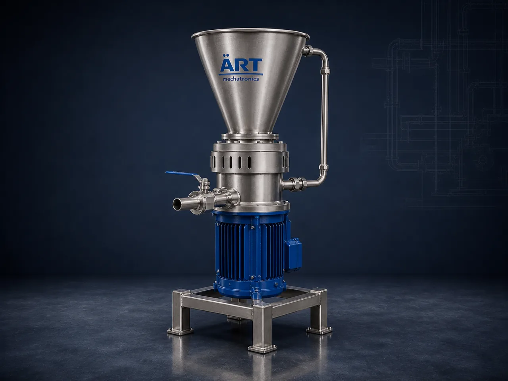

Colloid Mill (Industrial Wet Milling & Emulsifying Machine)
A Colloid Mill is a wet milling machine that reduces and disperses solids inside a liquid by forcing the product through the narrow gap between a fast-turning rotor and a fixed stator.

About the Colloid Mill
Colloid mills are used wherever a product has to be fine, uniform and stable in liquid form: sauces, ketchup and mayonnaise, nut butters, ointments and creams, syrups and suspensions, cosmetic emulsions, and paint, ink and chemical dispersions. ART Mechatronics supplies colloid mills with an adjustable rotor-stator setting, hygienic construction options, and inline or recirculation arrangements to suit the process line.
One machine, many names
Buyers search for this equipment under many terms — we manufacture all of them:
Working Principle of Colloid Mill
Pre-mixed liquid, slurry or paste enters the mill through:
Product is forced through the narrow gap between:
Shear breaks down particles and droplets
The clearance between rotor and stator is set to control how fine the product becomes.
Lets the same mill handle different products
Solid and liquid phases are dispersed into a uniform mixture inside:
Gives a smooth, stable emulsion or suspension
Milled product is passed onward, or returned for a further pass, through:
Contact parts are cleaned between products using:
Optional CIP connection for hygienic duty
Types of Colloid Mills
Industries Using Colloid Mills
🍛 Food, Sauces & Spreads
- Ketchup, sauces and mayonnaise
- Nut butters and fruit pulps
💊 Pharmaceutical & Ayurvedic
- Ointments, creams and gels
- Suspensions and syrups
💄 Cosmetics & Personal Care
- Lotions and emulsions
- Toothpaste and shampoo bases
⚗️ Chemical & Industrial
- Paint, ink and pigment dispersions
- Adhesives and resins
🌾 Agro & Spice Processing
- Wet masala and spice pastes
- Chutney and curry pastes
♻️ Bio & Waste Processing
- Slurry conditioning
- Organic waste homogenising
Features & Advantages
- Fine, uniform dispersion of solids in liquid
- Stable emulsions and suspensions
- Adjustable rotor-stator gap for different products
- Inline or recirculation operation
- Food and pharma grade construction options
- Dismantles easily for cleaning
- Compact machine footprint
Technical Highlights
- Throughput: Custom engineered to the application
- Milling Action: Adjustable rotor-stator gap
- Orientation: Vertical, horizontal or inline
- Contact Parts: Stainless steel construction options
- Jacketing: Temperature-controlled jacket (optional)
- Automation: PLC-based control (optional)
Turnkey Colloid Mill Solutions
ART Mechatronics offers:
- Product trials and mill selection
- Integration with mixing and homogenising lines
- Equipment manufacturing
- Piping, pump and recirculation arrangement
- Installation & commissioning
- After-sales service & AMC
Why Choose ART Mechatronics
- Wet milling and homogenising experience across food, pharma and chemical lines
- Machines matched to the product rather than a standard fit
- Hygienic construction options for food and pharma duty
- Integrates with ART mixing, liquid processing and filling equipment
- Support from product trials through to commissioning
Applications
- Sauce & Ketchup Plants
- Ointment & Cream Manufacturing
- Cosmetic & Personal Care Units
- Paint, Ink & Pigment Plants
- Spice & Masala Paste Units
- Syrup & Suspension Manufacturing
- Nut Butter & Spread Plants
Industries that use the Colloid Mill
Related Size Reduction & Grinding machines
Get pricing & specs for the Colloid Mill
Share the product, target capacity, current process and plant location. These details help our engineers discuss the right machine or line configuration.
One partner, from design to start-up
ART Mechatronics designs, manufactures, installs and commissions your Colloid Mill solution with regional presence in India, UAE and Thailand.